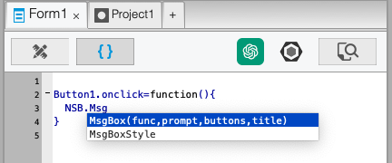
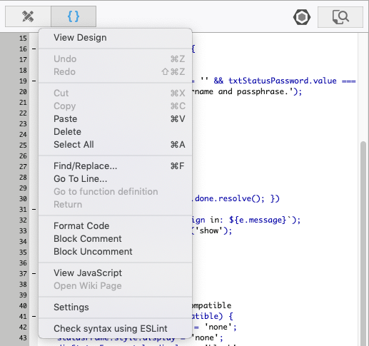
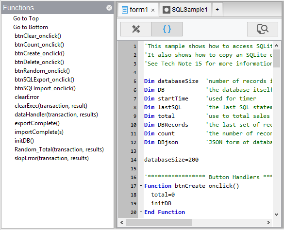
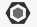

Code Window
Jump to navigation
Jump to search
{kind=link}

{kind=link}

{kind=link}

The Code Window is used the edit the code in your program.
- You can put all your code in a single block, or have a separate code block for each form as well as a global section. At runtime, they are treated as a single block, so be careful not to redefine functions or variables.
- Code can be in JavaScript, BASIC or other language, depending on the setting in New Project, Form or Code Module properties.
Features
Editing
- In BASIC, statements can be made longer than one line by using a space and a “_” character at the end of a line.
- Syntax checking is done as each BASIC line is completed. If there is a syntax error, the line gets a red underline. If you hover over it, you can see the full error message.
- Cut, Paste, Delete and other similar functions can be used from the Menu, the Toolbar or the keyboard.
- Line numbers may be up to 99999.
- Format Code cleans up the formatting of BASIC code, normalizing all the indents.
Moving Around
- The dropdown bar at the top of the screen can be used to go directly to a Sub, Function or line number.
- Code Folding makes it easier to look at just the code you are interested in. Click on the minus sign to the left of a code block to collapse it.
- To go directly to a function in your program, select the name of the function elsewhere in your code, right click and select "Go to function definition."
- If you have gone directly to a function, the 'Return' option will take you back.
Translation
- If you are working in a language other than JavaScript, you may view the translation of the code. Do a right click and select "View JavaScript". You can do this for the whole module or just a selection.
AI Coding Assistant
{kind=link}
- Click on this icon to bring up the AI Coding Assistant.
Style Checking with ESLint
{kind=link}

- If you're using JavaScript, the option "Check Syntax using Eslint" will appear. The module will be checked for proper style using eslint. The AirBNB Style Guide is used. A dialog box listing any errors or warnings will be displayed. You can also click on the Eslint icon in the tab bar.
Inserting Code
- To insert code from an external file, drag and drop the file from the Finder into the Code Window.
- The code will be inserted into your app at the current position, just as if you had typed it in.
- You can insert code from .txt, .cod, .bas or .js files.
Help
- To bring up the Wiki page for a keyword, select the word, right click and select "Open Wiki Page".
- Where possible, hints will appear for objects when you enter the period.
- Where possible, tips will appear for functions when you enter the open parenthesis. (Note: does not currently work on Mac).
Next: Deploy Options